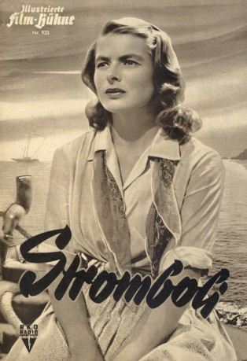

#11011 Stromboli
 
 IMDB-Wertung: 7.4 / 10
IMDB-Wertung: 7.4 / 10  Tomatometer: 83
Tomatometer: 83  Metascore: 0
Metascore: 0 
Italien nach dem Zweiten Weltkrieg, 1948: In einem Flüchtlingslager lernt die Litauerin Karin den Soldaten Antonio kennen. Um möglichst schnell aus dem Lager zu kommen, heiratet sie den eher simplen Fischer von der Vulkaninsel Stromboli vom Fleck weg. Sie reisen nach Stromboli. Karin ist entsetzt über die Armut und die Kargheit der Insel und möchte am liebsten sofort wieder abreisen. Hoch über der Insel droht der immer aktive Vulkan.
Jahr: 1950
Dauer: 100 Minuten
FSK: 12
Land: Italien Studio: RKO Radio FilmsTonspuren:
Untertitel: Deutsch,
Auflösung: 1080p (1488x1080) Größe: 8140 MB
Genre: Drama
Regisseur: Roberto Rossellini
Drehbuch: Roberto Rossellini, Sergio Amidei, Gian Paolo Callegari, Art Cohn, Renzo Cesana
Soundtrack: Renzo Rossellini
Darsteller:
 Ingrid Bergman als Karin
Ingrid Bergman als Karin- Mario Vitale als Antonio
- Renzo Cesana als The Priest
- Mario Sponzo als The Man from the Lighthouse
- Gaetano Famularo als Man with guitar (uncredited)
- Angelo Molino als Child (uncredited)
- Roberto Onorati als Man (uncredited)
Datei: X:\1950-1959\Stromboli (1950, FSK12, 1488x1080).mkv seit 16.04.2019
Festplatte: Gemischt-01+Anime
 Es gibt insgesamt 141 Filme in der Gruppe '1950-1959'
Es gibt insgesamt 141 Filme in der Gruppe '1950-1959'